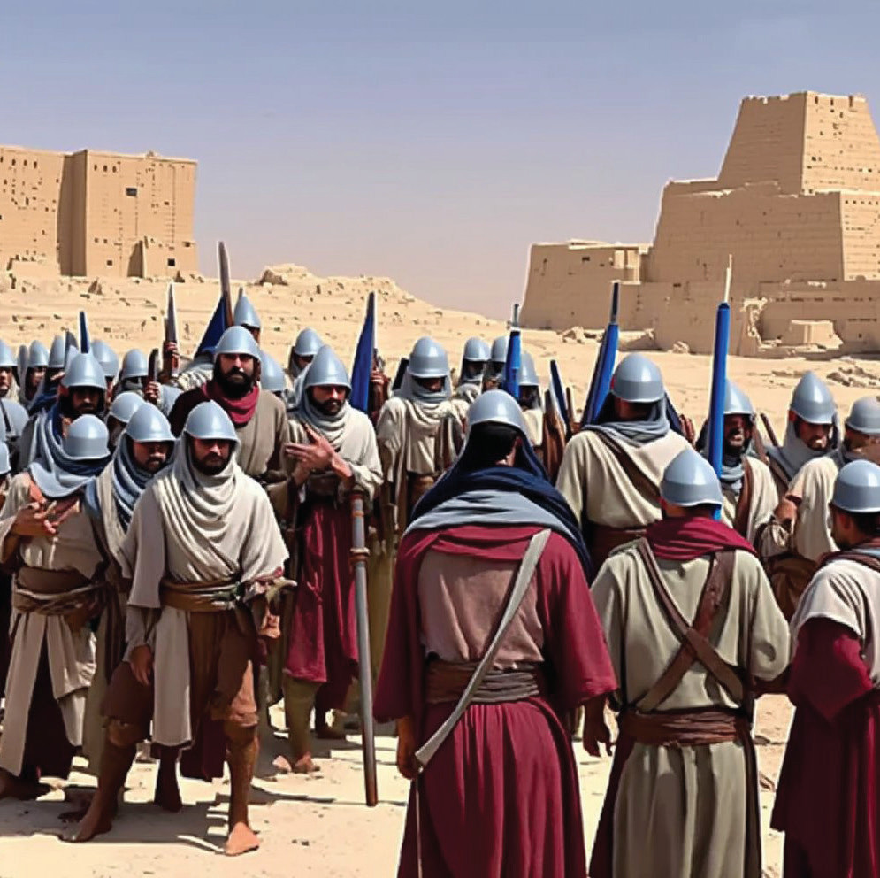

Form Two
Tanzania Institute of Education (TIE)


Bible Knowledge
58
The incident of unsuccessful conquest of the city of Ai was due to the sin of
Achan who spared and hid some property from the city of Jericho contrary to the instruction given to them by God, that everything in Jericho must be destroyed.
The Israelites repented of their transgression and God forgave them. Then, God reordered Joshua to proceed taking over the city of Ai using a 30,000 squad of male soldiers. Furthermore, Israelites were instructed that the smaller group should approach the city, and when the men of Ai come out to fight them, they should run back their barracks. Then, the lager group would come out from their hiding place and capture the city, and set it on fire. Finally, the captured goods and livestock from
Ai would be plundered by the people of Israelites.
The instructions were followed and the city was captured. All men of Ai were killed except their king who was captured and taken to Joshua. As a way of teaching people, the importance of obeying God’s command, Joshua hung the king of Ai on the tree and left the corpse hanging throughout the day up to the evening (Joshua 7:1-26).

Figure 4.3: The Israelites capture the city of Ai